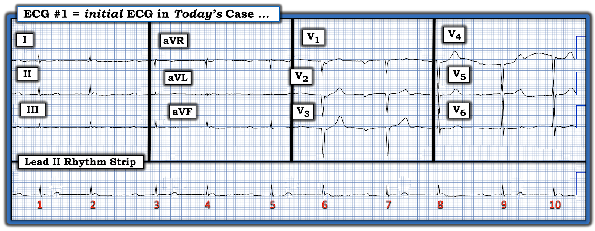
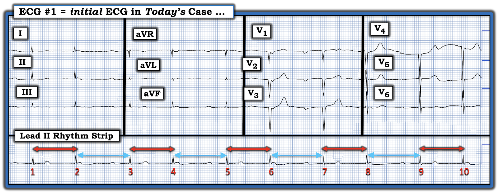
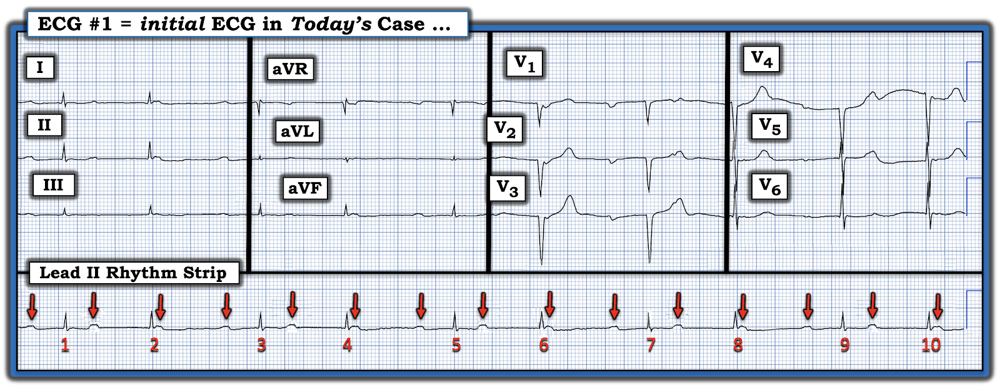
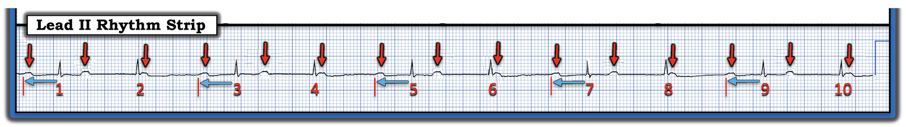
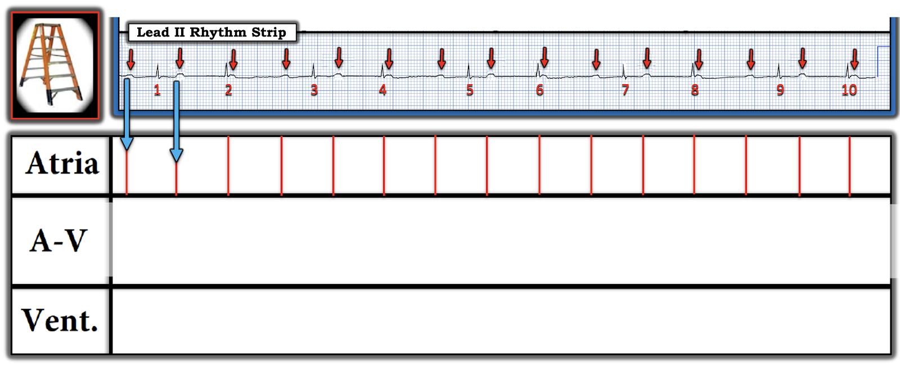
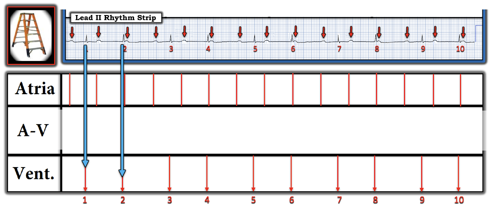
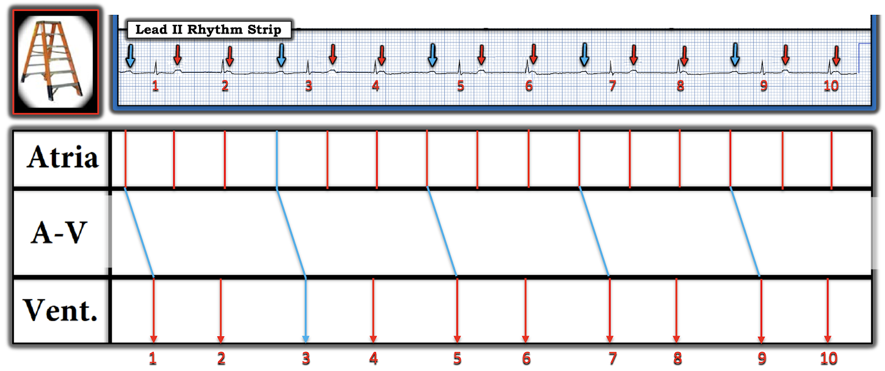
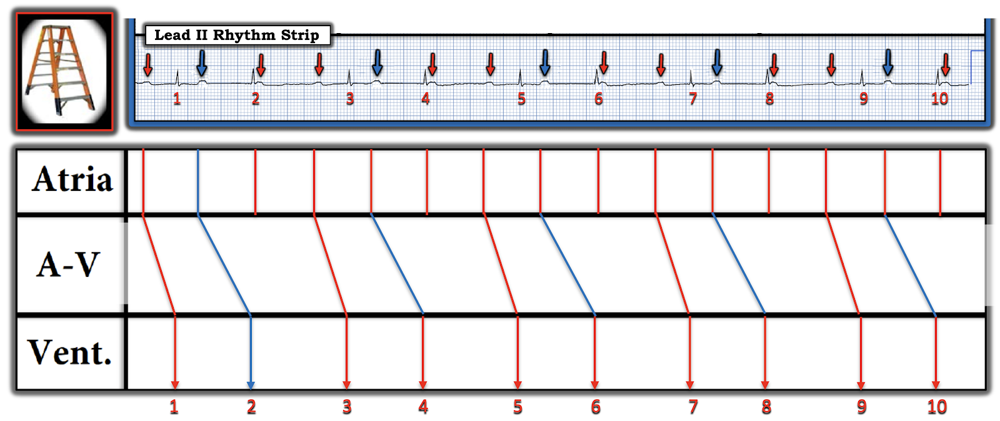
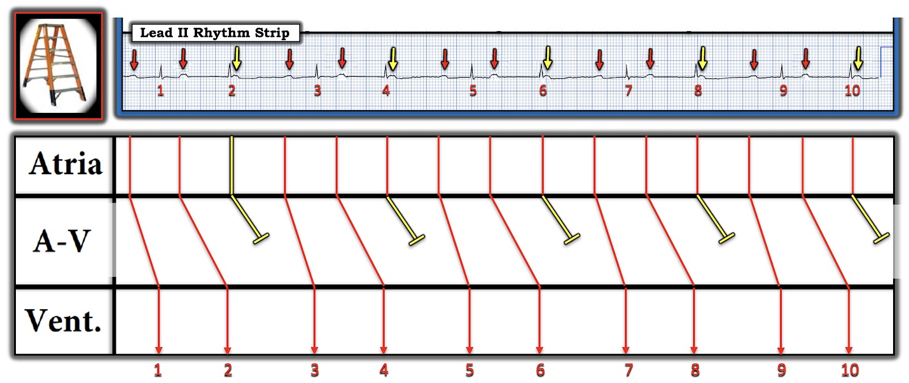
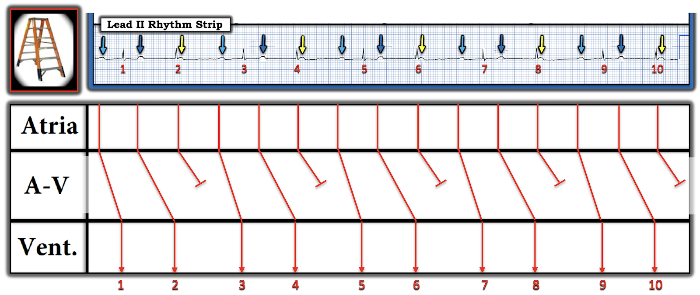

ECG Blog #457 — Có nhát nào được dẫn truyền không?
Tôi được gửi điện tâm đồ trong Hình-1 — chỉ được cho biết rằng bản ghi này của một bệnh nhân bệnh nặng cấp tính đang thở máy, đang được đánh giá vì nhịp chậm. Các bác sĩ điều trị cho rằng nhịp này là blốc AV hoàn toàn.
CÂU HỎI:
- Bạn sẽ diễn giải điện tâm đồ trong Hình-1 như thế nào?
- Nhịp này có phải là blốc AV hoàn toàn không?


SUY NGHĨ CỦA TÔI về Hình-1:
Câu trả lời "Ngắn" cho câu hỏi nhịp hôm nay có phải là blốc AV hoàn toàn hay không là không! "Tin tốt" — là tôi biết chỉ trong vài giây rằng nhịp hôm nay khó có khả năng là blốc AV hoàn toàn — vì có nhịp theo nhóm (group beating)!
- Trong phần lớn trường hợp khi có blốc AV hoàn toàn — đáp ứng thất sẽ đều (hoặc ít nhất là gần như đều). Đó là vì hầu hết các nhịp thoát (dù xuất phát từ nút AV; bó His; hay tâm thất) — có xu hướng đều một cách đáng ngạc nhiên — trừ khi bị thay đổi bởi tăng kali máu, nhiễm toan hoặc các tình trạng ngộ độc khác.
- Vì vậy, dù luôn có thể có ngoại lệ — sự hiện diện của tính không đều có quy luật (tức là, nhịp theo nhóm, dưới dạng các khoảng ngắn-dài xen kẽ có thời gian tương đương nhau) — khiến cho khả năng không có dẫn truyền nào, như sẽ gặp nếu có blốc AV độ 3, là rất khó xảy ra.
- LƯU Ý: Nếu khi nhìn bằng mắt còn nghi ngờ về tính không đều có quy luật trong Hình-1 — dùng compa đo (calipers) cho phép bạn chỉ trong vài giây xác nhận thời gian tương đương của các khoảng R-R mũi tên ĐỎ — và thời gian tương đương của các khoảng R-R mũi tên XANH dài hơn một chút (thể hiện trong Hình-2).
- ĐIỂM THEN CHỐT (PEARL) #1: Sự hiện diện của nhịp theo nhóm — luôn phải gợi ý khả năng dẫn truyền Wenckebach. Mặc dù có những nguyên nhân tiềm tàng khác gây nhịp theo nhóm (tức là, nhịp đôi nhĩ; PAC bị blốc, v.v.) — nhận ra dấu hiệu này (như chúng ta thấy trong Hình-2) là một "lời báo trước" để cảnh giác với khả năng blốc AV độ 2, Mobitz loại I. Và, ngay khi nhận ra nhịp theo nhóm — Chúng ta biết rằng nhịp này nhiều khả năng không phải là blốc AV hoàn toàn!


===========================
Câu trả lời "Dài hơn": Đây là nhịp gì?
Như mọi khi — tôi ưa đánh giá nhịp tim bằng Cách tiếp cận Ps, Qs, 3R như một cách hệ thống, tiết kiệm thời gian và dễ dùng để nhớ lại 5 Thông số MẤU CHỐT (Xem ECG Blog #185 để ôn lại khái niệm này).
Quay lại Hình-1 — tôi tìm các Ps, Qs và 3Rs:
- Sóng P rõ ràng là có hiện diện.
- Phức bộ QRS rõ ràng là hẹp ở cả 12 chuyển đạo.
- Nhịp không đều (Regular) — vì như chúng ta đã xác định, có nhịp theo nhóm.
- Do nhịp theo nhóm này — tần số (Rate) không cố định, nhưng vì các khoảng R-R dài từ 4 đến 6 ô lớn — tần số tim chung là chấp nhận được (trong khoảng 55-70/phút).
- Điều đó còn lại cho chúng ta việc phải đánh giá Thông số thứ 5 — đó là "Có liên quan" (Related) (tức là, Liệu có sóng P nào hiện diện "có liên quan" và do đó được dẫn truyền xuống phức bộ QRS lân cận nào không?).
===========================
Trong Hình-3 — Chúng ta xem kỹ hơn các Ps, Qs và 3Rs:
- Các mũi tên ĐỎ trong Hình-3 cho thấy có nhịp xoang nền đều (sóng P dương, khoảng P-P thay đổi rất ít trong suốt dải nhịp chuyển đạo II dài).
- ĐIỂM THEN CHỐT (PEARL) #2: Lưu ý rằng có nhiều sóng P hơn phức bộ QRS trong Hình-3 (tức là, tổng cộng 15 sóng P mũi tên ĐỎ — nhưng chỉ có 10 phức bộ QRS). Điều này có nghĩa là ít nhất một số sóng P này không được dẫn truyền — và, vì các sóng P đều (tức là, Mọi sóng P đều "đúng lúc" — nghĩa là không có PAC bị blốc) — điều này cho chúng ta biết lý do một số sóng P "đúng lúc" này không được dẫn truyền là có một dạng blốc AV độ 2 nào đó!
ĐIỂM THEN CHỐT (PEARL) #3: Giờ hãy lùi lại một chút — và NHÌN lại lần nữa dải nhịp chuyển đạo dài trong Hình-3. Chẳng phải thao tác đơn giản là đánh dấu tất cả sóng P trong nhịp hôm nay giúp việc đánh giá Thông số thứ 5 dễ dàng hơn sao? Đánh giá Thông số thứ 5 này là MẤU CHỐT để giải nhịp hôm nay = Có sóng P nào trong Hình-3 được dẫn truyền không?
- GỢI Ý: Để trả lời câu hỏi này — hãy NHÌN trong Hình-3 vào các khoảng PR phía trước mỗi nhát trong dải nhịp chuyển đạo II dài. Có khoảng PR nào trong số này bằng nhau không?


===========================
TRẢ LỜI: Có sóng P nào trong Hình-3 được dẫn truyền không?
Trong Hình-2 — Chúng ta đã thấy có nhịp theo nhóm với các khoảng R-R ngắn hơn và dài hơn một chút xen kẽ nhau.
- Hình-4 nhấn mạnh rằng mỗi khoảng PR kết thúc các khoảng R-R dài hơn một chút trong nhịp hôm nay đều bằng nhau! (tức là, các mũi tên XANH phía trước nhát #1,3,5,7 và #9 trong Hình-4 cho thấy các khoảng PR này đều giống hệt nhau = 0.40 giây). Điều này chứng minh rằng mỗi sóng P phía trước các nhát #1,3,5,7,9 đều được dẫn truyền!
- ĐIỂM THEN CHỐT (PEARL) #4: Các dấu hiệu gồm nhịp theo nhóm + nhịp xoang nền đều trong đó có nhiều sóng P hơn phức bộ QRS — nhưng trong đó mỗi "khoảng ngưng" ngắn của nhịp (tức là, mỗi khoảng R-R dài hơn một chút trong Hình-4) kết thúc bằng một sóng P xoang được dẫn truyền với cùng khoảng PR — gần như khẳng định rằng nhịp hôm nay là một dạng blốc AV độ 2, Mobitz loại I (tức là, Wenckebach AV).
Các dấu hiệu nêu trong ĐIỂM THEN CHỐT #4 tạo thành một số "Dấu chân" của Wenckebach (bàn kỹ hơn trong ECG Blog #251).
- Mặc dù ở thời điểm này trong quá trình đánh giá — tôi đã gần như chắc chắn rằng nhịp hôm nay là một dạng Mobitz I nào đó (và thực ra đó là tất cả những gì chúng ta cần biết để xử trí lâm sàng tối ưu) — tôi vẫn chưa chứng minh được các chu kỳ có khoảng PR tăng dần cho đến khi một sóng P xoang đúng lúc bị rớt (như phải thấy trong Wenckebach AV điển hình).
- Để chứng minh giả thuyết của mình — tôi cần dựng một giản đồ bậc thang (laddergram) (Xem bên dưới).


===========================
Còn Điện tâm đồ 12 chuyển đạo thì sao?
Ở thời điểm này (trước khi xem kỹ hơn nhịp hôm nay bằng giản đồ bậc thang) — Chúng ta nên xem xét điện tâm đồ 12 chuyển đạo (nằm phía trên dải nhịp chuyển đạo II dài trong Hình-3, mà tôi trình bày lại bên dưới).
- Có điện thế thấp ở các chuyển đạo chi (biên độ QRS ≤5 mm ở tất cả chuyển đạo chi — các nguyên nhân có thể gây điện thế thấp được bàn chi tiết hơn trong ECG Blog #272).
- Như đã nêu — QRS hẹp ở cả 12 chuyển đạo.
- Xét đến tần số chậm — QTc có vẻ không kéo dài.
- Trục mặt phẳng trán bình thường (khoảng +60 độ).
- Không có lớn buồng tim.
- Có sóng QS ở các chuyển đạo V1 đến V4. Điều này gợi ý đã có nhồi máu thành trước vào một thời điểm nào đó. Tuy vậy — có ST-T dẹt không đặc hiệu ở nhiều chuyển đạo, trông không có vẻ là cấp tính.
===========================
GIẢN ĐỒ BẬC THANG (LADDERGRAM):
Quay lại xem xét sâu hơn nhịp hôm nay — cách TỐT NHẤT để chứng minh nhịp này là blốc AV độ 2 thuộc loại Mobitz I (Wenckebach AV) — là dựng một giản đồ bậc thang. Tôi minh họa điều này trong Hình-5 đến -10:




Các mũi tên XANH chỉ điểm khởi đầu của mỗi phức bộ QRS làm mốc cho từng phức bộ QRS trong bản ghi này.
Lưu ý rằng tôi vẽ các đường gần thẳng đứng cho mỗi nhát trong 10 nhát QRS ở Tầng Thất. (Nếu điện tâm đồ 12 chuyển đạo cho thấy blốc nhánh với phức bộ QRS rộng — thì tôi sẽ vẽ các đường nghiêng hơn trong tầng thất để phản ánh dẫn truyền chậm hơn khi xung động đi qua tâm thất).
Điểm MẤU CHỐT: "Phần DỄ" khi dựng hầu hết các giản đồ bậc thang gồm 2 BƯỚC đầu tiên này (như thể hiện trong Hình-5 và -6). Giờ thử thách bắt đầu — đó là cố gắng "giải" giản đồ bậc thang bằng cách xác định những sóng P nào trong Tầng Nhĩ được dẫn truyền xuống tâm thất.








Trong mỗi nhóm, sóng P thứ 1 (mũi tên XANH nhạt) được dẫn truyền với khoảng PR kéo dài = 0.40 giây. Sóng P thứ 2 (mũi tên XANH đậm) được dẫn truyền với khoảng PR còn dài hơn nữa — và sau đó sóng P thứ 3 trong mỗi nhóm (mũi tên VÀNG) không được dẫn truyền — sau đó, chu kỳ lại bắt đầu với mũi tên XANH nhạt kế tiếp. Như vậy, nhịp = blốc AV độ 2, Mobitz loại I (Wenckebach AV) với dẫn truyền AV 3:2 (vì cứ 3 sóng P thì có 2 sóng P được dẫn truyền).
==========================================
Lời cảm ơn: Xin cảm ơn Jean Max Figueiredo (từ Iguaçu, Brazil) đã chia sẻ ca bệnh và bản ghi này.
==========================================

==============================
Các bài ECG Blog liên quan đến ca hôm nay:
- ECG Blog #205 — Ôn lại Cách tiếp cận hệ thống của tôi trong đọc điện tâm đồ 12 chuyển đạo.
- ECG Blog #185 — Ôn lại hệ thống Đọc nhịp của tôi, dùng Cách tiếp cận Ps, Qs, 3R.
- ECG Blog #188 — Ôn lại cách đọc và vẽ Giản đồ bậc thang (kèm ĐƯỜNG DẪN tới hơn 100 ca có giản đồ bậc thang — nhiều ca có minh họa tuần tự từng bước).
- ECG Blog #192 — 3 Nguyên nhân gây phân ly nhĩ thất.
- ECG Blog #191 — Ôn lại sự khác biệt giữa phân ly nhĩ thất và blốc AV hoàn toàn.
- ECG Blog #389 — ECG Blog #373 — và ECG Blog #344 — để ôn lại một số ca minh họa "giải quyết vấn đề blốc AV".
- ECG Blog #251 — Ôn lại các khái niệm tính chu kỳ Wenckebach và "Dấu chân" của Wenckebach.
- ECG Blog #164 — Ôn lại một ca blốc AV độ 2 Mobitz I điển hình (kèm bàn luận chi tiết về "Dấu chân" của Wenckebach).
- ECG Blog #236 — một ECG Video Pearl về 3 loại blốc AV độ 2.
- ECG Blog #344 — ôn lại kỹ lưỡng các loại blốc AV độ 2 (Mobitz I so với Mobitz II so với blốc AV 2:1).
- ECG Blog #63 — Mobitz I, blốc AV độ 2 kèm nhịp thoát bộ nối.
- ECG Blog #195 — ôn lại phân ly nhĩ thất đồng nhịp (isorhythmic).
- ECG Blog #267 — Ôn lại, bằng các giản đồ bậc thang từng bước, cách phân tích một ca Mobitz I có nhiều hơn một cách giải thích khả dĩ.
- ECG Blog #405 — Bài trình bày Video ECG ôn lại sự phân biệt giữa phân ly nhĩ thất và blốc AV hoàn toàn (độ 3) (Để xem Mục lục có ĐƯỜNG DẪN của ECG Video này — Bấm vào MORE trong phần Mô tả bên dưới video trên YouTube).